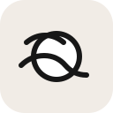
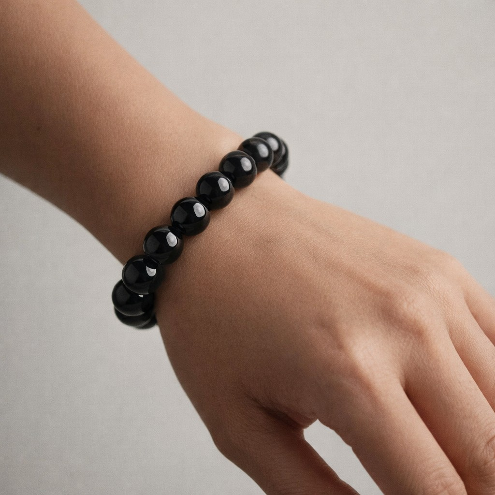
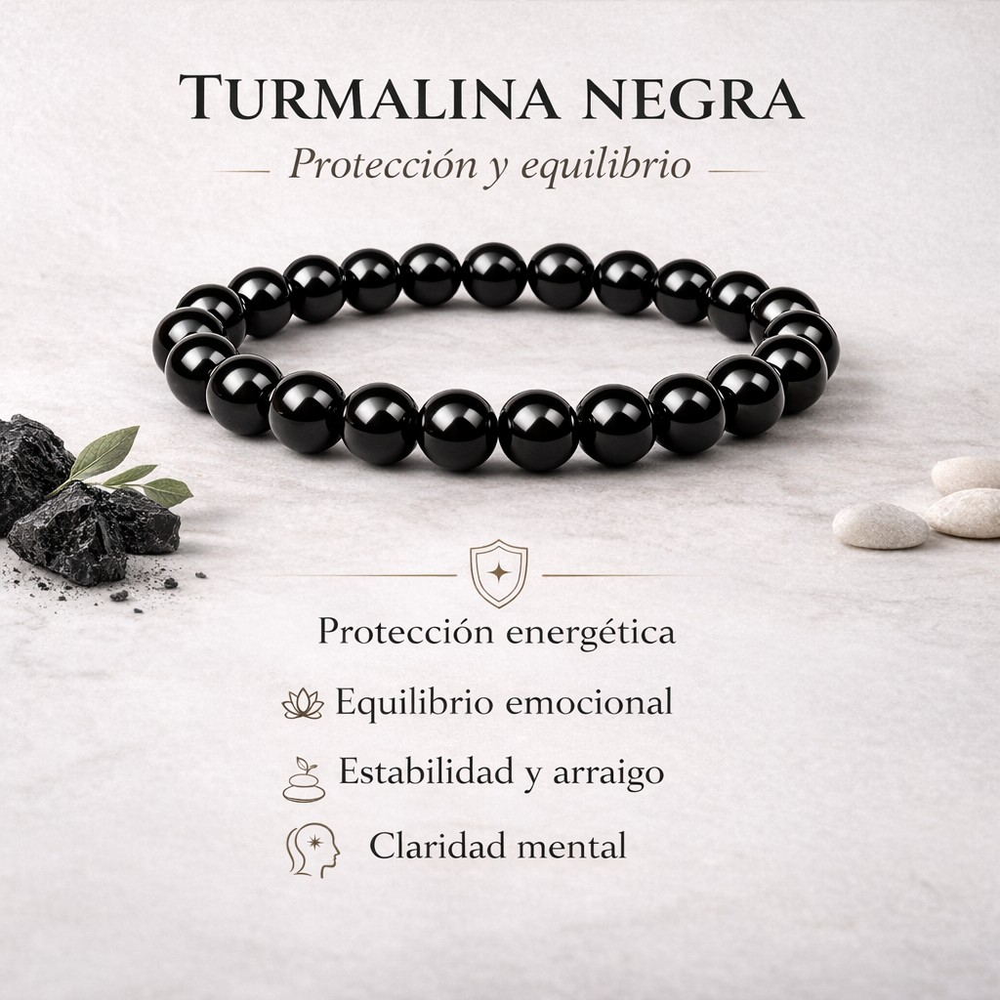

Color negro: presencia y sobriedad
Su estética oscura hace que combine fácilmente con el día a día, pero también refuerza esa sensación de piedra de arraigo, fuerza y estabilidad. Es una pieza discreta, pero con presencia.

Una pieza de presencia intensa y estética elegante, inspirada en la turmalina negra y en su simbolismo de protección, calma y arraigo interior.
Pensada para acompañarte en tu día a día como amuleto personal y como recordatorio de equilibrio, serenidad y fuerza interior.

La turmalina negra se asocia tradicionalmente con la protección energética, el arraigo y la limpieza simbólica de cargas densas del entorno. Muchas personas la eligen como amuleto personal, como símbolo de calma y como gesto diario de reconexión consigo mismas.
Es muy habitual coger una pulsera de cuentas con la mano, mover las bolitas, contarlas una a una o simplemente sentir su textura entre los dedos. Ese gesto repetitivo puede convertirse en una pequeña pausa sensorial durante el día.
En distintas culturas existen objetos parecidos, como las cuentas de preocupación o las malas de meditación, que se manipulan suavemente para acompañar momentos de calma, respiración o concentración.
Su estética oscura hace que combine fácilmente con el día a día, pero también refuerza esa sensación de piedra de arraigo, fuerza y estabilidad. Es una pieza discreta, pero con presencia.
Dentro del enfoque espiritual, la turmalina negra suele relacionarse con protección, límites y limpieza simbólica. Por eso muchas personas la usan como recordatorio de cuidar su energía y no cargar con todo lo externo.
Tradicionalmente se vincula con la protección simbólica frente a energías densas y ambientes emocionalmente cargados.

Muchas personas la usan como recordatorio simbólico para bajar revoluciones y recuperar sensación de serenidad.
Se integra a menudo en rutinas nocturnas o momentos de pausa para favorecer una sensación de descanso más tranquilo.
Se asocia con presencia, equilibrio y conexión interior como recordatorio diario de autocuidado.

Más allá de lo estético, puede convertirse en un pequeño ritual diario de presencia y conexión.
Puedes dejarla un momento en un espacio tranquilo o acompañarla de respiración consciente antes de usarla.
Antes de ponértela, formula una intención sencilla que quieras recordar durante el día.
Al retirarla, puedes hacerlo como gesto de pausa, descarga simbólica y vuelta a ti.

Sí, está pensada como accesorio de uso diario y como amuleto personal de acompañamiento.
Sí, encaja muy bien como detalle con significado simbólico y presentación cuidada.
Sí. El contenido está planteado desde la tradición simbólica asociada a la turmalina negra.
No. Solo un uso cuidadoso, limpieza suave y evitar golpes o productos agresivos.
Si quieres compartir tu experiencia, puedes dedicar un minuto a dejar una reseña honesta en Amazon. Para una pequeña marca española como RAIAN, nos ayuda más de lo que imaginas a seguir mejorando.
Accede directamente al producto RAIAN en Amazon y tenlo siempre a mano cuando quieras repetir o regalarla a alguien especial.
Comprar en AmazonGracias por elegir RAIAN. Hemos preparado esta guía para que disfrutes tu pulsera Turmalina como una pieza especial, con presencia, significado y cuidado.
La información sobre protección energética, limpieza simbólica, calma, arraigo o bienestar se presenta como contenido simbólico, cultural y espiritual. No supone una garantía de resultados ni sustituye ningún consejo profesional.